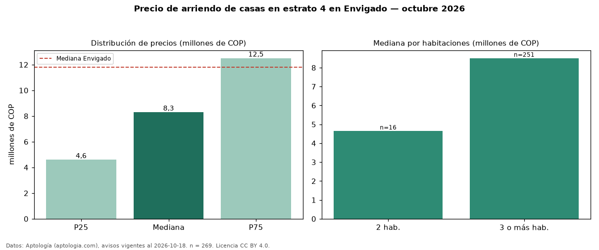

Precio de arriendo de casas en estrato 4 en Envigado — octubre 2026
En Envigado, la mediana de canon mensual de casas en estrato 4 es COP 8,30 millones, según 269 avisos vigentes. Eso es 30 % menos que la mediana de las casas en arriendo de Envigado (COP 11,80 millones, n = 2.132); este segmento reúne el 13 % de esos avisos. Por metro cuadrado, la mediana es COP 32.308/m² al mes (n = 251), 23 % por debajo de las casas en arriendo de Envigado (COP 41.748/m²). La mitad central de los avisos va de COP 4,60 millones a COP 12,50 millones (razón 2,7), una dispersión alta. El área mediana anunciada es 232 m². El segmento con más oferta es el de 3 o más habitaciones (251 avisos, mediana COP 8,50 millones); pasar de 2 habitaciones a 3 o más habitaciones cambia la mediana +83 %. 95 % de los avisos con el dato declara parqueadero. Datos: Aptología (aptologia.com), CC BY 4.0 — https://www.aptologia.com/arriendo/envigado. Archivos: PDF, CSV con las cifras y gráfica PNG.

| Avisos únicos | 269 |
|---|---|
| Percentil 25 | COP 4.600.000 |
| Mediana | COP 8.300.000 |
| Percentil 75 | COP 12.500.000 |
| Mediana por m² | COP 32.307 |
Fuente: avisos vigentes de portales inmobiliarios recopilados por Aptología, deduplicados (mínimo 30 avisos únicos por celda). Precios pedidos, no cerrados. Fecha: 2026-10-18.